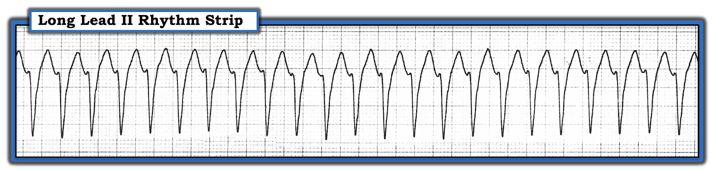
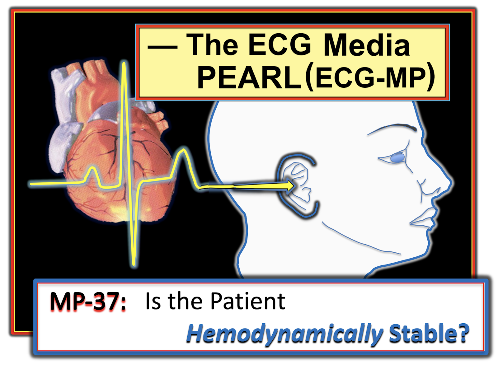
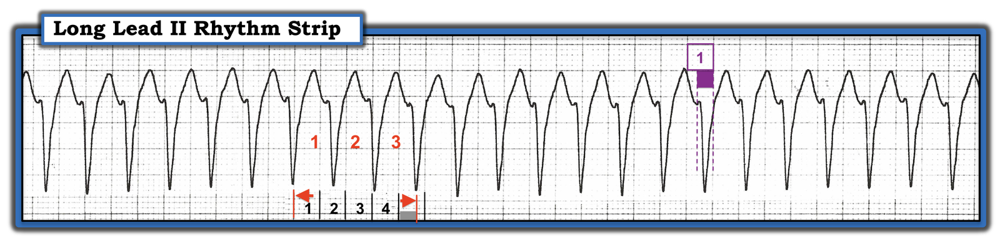
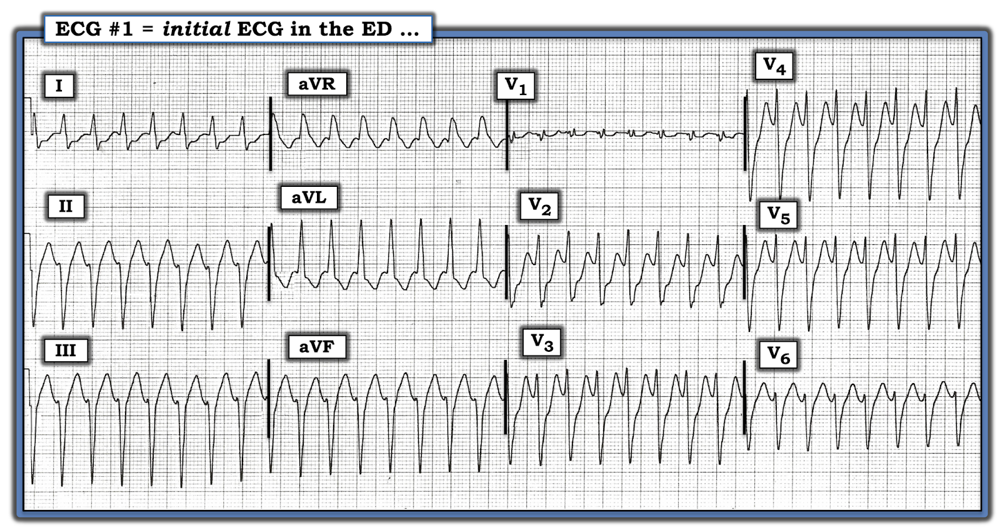
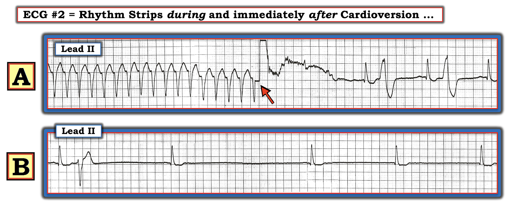
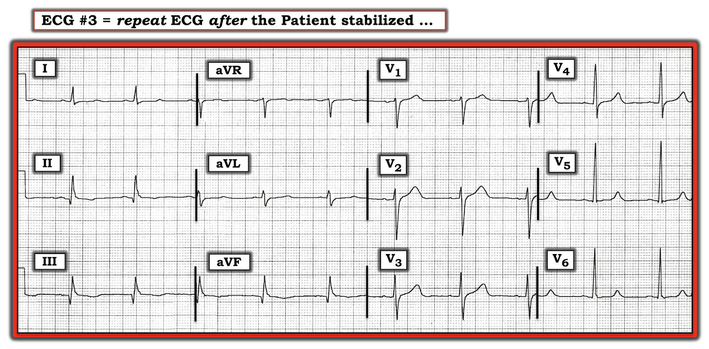
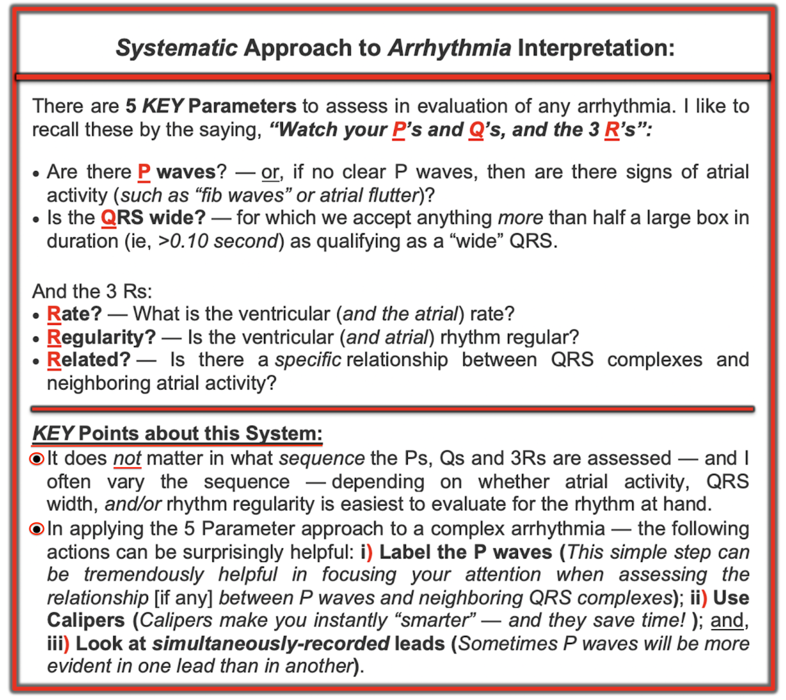

ECG Blog #220 (403) — VT hay dẫn truyền lệch hướng?
======================================
— Xem ECG Blog #403 — để xem phần trình bày ca này dưới dạng Video!
======================================
Dải nhịp chuyển đạo II dài trong Hình-1 được ghi từ một người đàn ông 51 tuổi đến ED (Khoa Cấp cứu) vì "hồi hộp đánh trống ngực" khởi phát 1 giờ trước.
- Bạn sẽ đọc bản ghi này NHƯ THẾ NÀO?
- Về lâm sàng — BẠN sẽ làm gì?


=======================================
LƯU Ý #1: Đến đây, một số bạn đọc có thể muốn nghe ECG Audio PEARL dài 6:00 phút trước khi đọc Suy nghĩ của tôi về điện tâm đồ ở Hình-1. Bạn cứ thoải mái xem lại Suy nghĩ của tôi về bản ghi này vào bất kỳ lúc nào (nằm bên dưới ECG MP-37).
=======================================


Hôm nay: ECG Media PEARL #37 (6:00 phút Audio) — Ôn lại cách xác định LIỆU bệnh nhân rối loạn nhịp của bạn có ổn định huyết động hay không!
CÁCH TIẾP CẬN của TÔI với nhịp ở Hình-1:
Chúng ta chỉ được cung cấp thông tin lâm sàng rất hạn chế — cụ thể là bệnh nhân là một người đàn ông 51 tuổi đến ED vì "hồi hộp đánh trống ngực" kéo dài 1 giờ. Rõ ràng, chúng ta cần tìm hiểu thêm về những gì đang diễn ra ...
- Việc thứ 1 cần làm — là NHÌN bệnh nhân! Câu hỏi MẤU CHỐT cần trả lời là xác định LIỆU bệnh nhân có ổn định huyết động hay không!
- Audio PEARL ( = ECG MP-37) dài 6 phút ở trên đề cập chi tiết vấn đề này. Về bản chất — "Phải có mặt ở đó mới biết!" để xác định bệnh nhân có huyết động ổn định (tức là, không có triệu chứng đáng kể như đau ngực, khó thở, tụt huyết áp, thay đổi tri giác — là hậu quả trực tiếp của tần số nhanh) hay không.
- Tầm quan trọng của việc đánh giá sự ổn định huyết động, thậm chí trước khi quyết định chẩn đoán nhịp — là NẾU bệnh nhân không ổn định huyết động với nhịp ở Hình-1 — thì không còn quan trọng nhịp này là VT (nhịp nhanh thất — Ventricular Tachycardia) — hay SVT (nhịp nhanh trên thất — SupraVentricular Tachycardia) — hay một thứ gì khác — vì dù thế nào, sốc điện chuyển nhịp đồng bộ ngay lập tức đều sẽ được chỉ định!
- Mặt khác — NẾU bệnh nhân có ổn định huyết động với nhịp ở Hình-1, thì theo định nghĩa, ít nhất bạn vẫn có một khoảng thời gian để đánh giá chẩn đoán nhịp.
Để thuận tiện cho việc bàn luận — Hãy giả sử rằng bệnh nhân này đang và vẫn tiếp tục ổn định huyết động!
- CÂU HỎI: NẾU bệnh nhân này ổn định huyết động — Điều đó có loại trừ khả năng nhịp này là VT không?
TRẢ LỜI:
- Chắc chắn là không! Mặc dù nhiều bệnh nhân bị VT bền bỉ nhanh chóng mất ý thức — một số lượng đáng ngạc nhiên bệnh nhân đang trong VT bền bỉ vẫn tỉnh táo và tương đối không triệu chứng không chỉ trong vài phút — mà đôi khi trong nhiều giờ hoặc lâu hơn (tôi biết khá nhiều ca VT bền bỉ kéo dài hơn một ngày).
- ĐIỂM THEN CHỐT (PEARL) #1: Việc bệnh nhân tỉnh táo, huyết áp bình thường (hoặc thậm chí tăng) và chỉ có triệu chứng tối thiểu — không loại trừ khả năng VT.
Bước TIẾP THEO là gì?
( — giả sử bệnh nhân vẫn ổn định huyết động)?
TRẢ LỜI:
Vì bệnh nhân ổn định huyết động — đã đến lúc đánh giá nhịp ở Hình-1. Tôi ưa dùng cách tiếp cận Ps, Qs & 3R (Được ôn lại trong ECG Blog 185).
- Không có sóng P trên dải theo dõi một chuyển đạo này.
- Phức bộ QRS rộng. Mặc dù phức bộ QRS trông không quá rộng — rõ ràng nó chiếm ít nhất 60% của 1 ô lớn (thể hiện bằng màu TÍM trong Hình-2) — nghĩa là thời gian QRS ≥0,12 giây.
- Regularity (độ đều): Nhịp đều.
- Rate (tần số): Tần số nhanh. Hình-2 minh hoạ cách dùng phương pháp Mỗi-Ba-Nhát (Every-Third-Beat Method) để ước tính nhanh tần số tim (phương pháp này được bàn đầy đủ trong ECG Blog #210). Cần hơi ít hơn 5 ô lớn (số màu ĐEN trong Hình-2) — để ghi được 3 nhát (số màu ĐỎ). Do đó — 1/3 tần số nhanh hơn một chút so với 300 ÷ 5 = 60-65/phút X 3 ~190-195/phút là tần số thất.
- Related (liên hệ): Vì không có sóng P — nên không có "liên hệ" nào giữa sóng P và QRS.
- Do đó — Chúng ta đã mô tả nhịp ở Hình-2 là một WCT ( = nhịp nhanh QRS rộng — Wide-Complex Tachycardia) đều với tần số ~190/phút, không có dấu hiệu rõ của hoạt động nhĩ.


CÂU HỎI:
- Chẩn đoán phân biệt của nhịp WCT đều ở Hình-2 là gì?
- Chúng ta có thể làm gì để tăng độ chính xác của chẩn đoán?
TRẢ LỜI:
Tôi ưa xem xét 10 bệnh cảnh sau trong Chẩn đoán Phân biệt của nhịp WCT Đều không có sóng P:
- VT (Ventricular Tachycardia — nhịp nhanh thất).
- VT
- VT
- VT
- VT
- VT
- VT
- VT
- Một SVT (nhịp nhanh trên thất — SupraVentricular Tachycardia) kèm hoặc BBB (blốc nhánh — Bundle Branch Block) có sẵn từ trước hoặc Dẫn truyền Lệch hướng.
- Một thứ gì khác ... (tức là, WPW, tăng kali máu).
NHỮNG ĐIỂM CHÍNH về Chẩn đoán Phân biệt ở trên:
- Lý do tôi lặp lại VT không dưới 8 lần trước khi liệt kê một khả năng khác — là để nhấn mạnh rằng xác suất thống kê để một nhịp WCT đều không có dấu hiệu rõ của hoạt động nhĩ hoá ra là VT bắt đầu ở mức ~80%. Theo ECG Blog #196 — xác suất này tăng lên ≥90% nếu bệnh nhân ở "một độ tuổi nhất định" (tức là, từ trung niên trở lên) và có bệnh tim nền. Do đó — Hãy mặc định là VT cho đến khi chứng minh được điều ngược lại!
- ĐIỂM THEN CHỐT (PEARL) #2: Khi đánh giá một bệnh nhân ổn định huyết động đang trong nhịp WCT đều không có sóng P — "tư duy" của chúng ta phải là chúng ta cần chứng minh rằng nhịp này không phải là VT, chứ không phải ngược lại.
- LƯU Ý: Để rõ ràng — tôi đã bổ sung chẩn đoán phân biệt các Nguyên nhân của nhịp WCT Đều nêu trên vào Phần bổ sung bên dưới, dưới dạng Hình-8.
Về Việc Tiếp theo Cần Làm:
- Vì chúng ta được biết bệnh nhân này vẫn ổn định huyết động — việc tiếp theo cần làm là ghi điện tâm đồ 12 chuyển đạo trong lúc đang nhịp nhanh (Hình-3):


Lý do nên Ghi điện tâm đồ 12 chuyển đạo Trong lúc Nhịp nhanh:
Như đã đề cập trong ECG Blog #196 — có một số lý do để ghi điện tâm đồ 12 chuyển đạo trong lúc đang nhịp nhanh QRS rộng:
- Ghi 12 chuyển đạo cho phép đánh giá hình dạng QRS. Bản ghi 12 chuyển đạo này có thể giúp chẩn đoán hoặc VT hoặc một căn nguyên trên thất (Xem Hình-6 và Hình-7 trong PHẦN BỔ SUNG bên dưới).
- Ghi 12 chuyển đạo cho chúng ta thêm 11 chuyển đạo bổ sung để tìm hoạt động nhĩ. Điều này có thể để lộ sóng cuồng nhĩ "tố cáo" với dẫn truyền AV 2:1 — hoặc, có thể phát hiện các sóng P xoang đều trước đó bị che khuất, hoàn toàn phân ly với các phức bộ QRS lân cận, qua đó chứng minh nhịp là VT.
- NẾU có bất kỳ nghi ngờ nào về thời gian QRS — đánh giá phức bộ QRS ở cả 12 chuyển đạo sẽ giải quyết được vấn đề. Đôi khi, một phần của QRS nằm trên đường đẳng điện ở một hoặc nhiều chuyển đạo — và, nếu điều này xảy ra ở đúng chuyển đạo bạn đang theo dõi — QRS có thể trông hẹp hơn nhiều so với thực tế.
- Đánh giá trục mặt phẳng trán trong lúc nhịp WCT đều là việc DỄ làm và, có thể mang tính chẩn đoán. NẾU có trục lệch "cực độ" (xác định khi thấy QRS âm hoàn toàn ở hoặc chuyển đạo I hoặc chuyển đạo aVF) — điều này gợi ý mạnh rằng nhịp là VT.
- Đôi khi, không thể chẩn đoán xác định một nhịp WCT đều trong lúc nhịp nhanh. Tuy nhiên, trong một số trường hợp này — so sánh điện tâm đồ 12 chuyển đạo ghi trong lúc nhịp nhanh với điện tâm đồ theo dõi ghi sau khi chuyển về nhịp xoang có thể cho phép chẩn đoán hồi cứu nhịp WCT.
- ĐIỂM THEN CHỐT (PEARL) #3: Nói chung — dẫn truyền lệch hướng có khả năng cao nhất là giống với một dạng rối loạn dẫn truyền nào đó (dạng blốc nhánh và/hoặc blốc phân nhánh). Ngược lại — VT có xu hướng biểu hiện hình dạng QRS kém rõ nét hơn, trông khác với các dạng blốc dẫn truyền đã biết (khái niệm này được bàn chi tiết hơn trong ECG Blog #211). Có ngoại lệ (!) — nhưng hiểu được khái niệm chung này giúp ích rất nhiều để biết cần tìm gì khi đánh giá một bản ghi 12 chuyển đạo ghi trong lúc nhịp WCT đều.
- ĐIỂM THEN CHỐT (PEARL) #4: Tìm được một điện tâm đồ 12 chuyển đạo trước đây của bệnh nhân, vào lúc họ đang nhịp xoang — có thể vô cùng quý giá. Đặc biệt ở bệnh nhân lớn tuổi có bệnh tim nền đáng kể — hình dạng QRS "nền" có thể trông rất bất thường. Nhưng NẾU hình dạng QRS ở mọi chuyển đạo trong lúc nhịp WCT trông giống hệt hình dạng QRS trên bản ghi nền khi bệnh nhân đang nhịp xoang — bạn đã chứng minh được căn nguyên trên thất!
- ĐIỂM THEN CHỐT (PEARL) #5: Một ngoại lệ đáng chú ý, trong đó hình dạng kiểu RBBB có thể gặp trong VT, là khi có VT phân nhánh (fascicular VT). Trong những ca thuộc dạng VT vô căn này — xung động phát sinh từ một vị trí trong thất rất gần phân nhánh trái trước hoặc phân nhánh trái sau. Kết quả là một nhịp WCT đều giống RBBB kèm hoặc LAHB hoặc LPHB (tức là, có thể khó phân biệt VT phân nhánh với SVT dẫn truyền lệch hướng chỉ từ một bản ghi 12 chuyển đạo). Phức bộ QRS thường không kéo dài nhiều trong VT phân nhánh (thường gặp nhất trong khoảng 0,11–0,14 giây). Nhận biết bệnh cảnh này rất quan trọng vì dù có nguồn gốc từ thất — thuốc được chọn để điều trị ban đầu lại là Verapamil tĩnh mạch (Để tìm hiểu thêm về VT phân nhánh — Xem ECG Blog #197).
CÂU HỎI:
- Bạn có nghĩ rằng điện tâm đồ 12 chuyển đạo ở Hình-3 làm cho khả năng nhịp WCT đều này là VT cao hơn hay thấp hơn không?
SUY NGHĨ của TÔI về điện tâm đồ 12 chuyển đạo ở Hình-3:
Dưới đây là những suy nghĩ cơ bản và nâng cao hơn về điện tâm đồ 12 chuyển đạo ghi trong lúc nhịp WCT đều:
- Mặc dù đánh giá cả 12 chuyển đạo ở Hình-3 xác nhận QRS giãn rộng — QRS không có vẻ giãn rộng nhiều.
- Không có dấu hiệu hoạt động nhĩ ở bất kỳ chuyển đạo nào.
- Mặc dù trục mặt phẳng trán ở Hình-3 lệch trái rõ rệt — việc phức bộ QRS ở các chuyển đạo dưới không âm hoàn toàn làm giảm giá trị chẩn đoán của dấu hiệu này trong việc gợi ý VT (tức là, có một sóng r khởi đầu nhỏ nhưng hiện diện ở mỗi chuyển đạo dưới) — Xem Quy tắc Đơn giản #1 ở Hình-6 trong Phần bổ sung bên dưới.
- Phức bộ QRS ở chuyển đạo V6 của Hình-3 chủ yếu (nhưng không hoàn toàn) âm. Theo Quy tắc Đơn giản #2 ở Hình-6 trong Phần bổ sung bên dưới — điều này nghiêng về VT, nhưng không thuyết phục bằng khi QRS ở chuyển đạo V6 âm hoàn toàn.
- Hình dạng QRS tổng thể ở Hình-3 giống dẫn truyền RBBB (blốc nhánh phải — Right Bundle Branch Block) — ở chỗ có phức bộ rsr' ở chuyển đạo V1, với sóng S tận rộng ở các chuyển đạo bên I và V6. Tuy vậy — có những đặc điểm không điển hình đối với dẫn truyền RBBB, gồm: i) Phức bộ QRS ở chuyển đạo V1 rất nhỏ, và không có sóng R' tận cao (Xem Hình-7 trong Phần bổ sung bên dưới); và, ii) Sóng r ở chuyển đạo V6 rất nhỏ, với biên độ sóng R giảm dần (thay vì tăng dần) khi đi từ chuyển đạo V4 sang chuyển đạo V6.
- Trục mặt phẳng trán lệch trái rõ rệt ở Hình-3 giống hình dạng LAHB (blốc phân nhánh trái trước — Left Anterior HemiBlock) — nhưng sóng r ở các chuyển đạo dưới không điển hình cho LAHB vì nhỏ hơn ở cả 3 chuyển đạo dưới so với thường thấy khi dẫn truyền trên thất.
Tổng hợp lại: Đánh giá điện tâm đồ 12 chuyển đạo ở Hình-3 trong lúc nhịp nhanh cho thấy một nhịp WCT đều với tần số ~190/phút, không có dấu hiệu rõ của hoạt động nhĩ.
- Về mặt thống kê — Chúng ta bắt đầu với khả năng ≥80% nhịp này là VT. Theo ĐIỂM THEN CHỐT #2 — Hãy nhớ rằng chúng ta cần chứng minh rằng nhịp này không phải là VT, chứ không phải ngược lại.
- Đánh giá hình dạng QRS ở Hình-3 thoạt nhìn gợi ý blốc hai phân nhánh (RBBB/LAHB). Tuy vậy — các đặc điểm không điển hình mô tả ở trên và việc QRS không giãn rộng nhiều hơn, nếu có, lại nghiêng về chẩn đoán VT phân nhánh. Dù không thể loại trừ SVT kèm hoặc RBBB/LAHB có sẵn hoặc dẫn truyền lệch hướng — tôi ước tính khả năng nhịp này là VT phân nhánh xấp xỉ 90%.
- Tìm được một điện tâm đồ trước đây của bệnh nhân này có thể giúp chẩn đoán SVT kèm rối loạn dẫn truyền có sẵn — NẾU hình dạng QRS trên bản ghi trước đó lúc nhịp xoang giống hệt hình dạng QRS trong lúc nhịp WCT ở Hình-3. Khi không có điện tâm đồ trước đây — nên mặc định là VT, và điều trị bệnh nhân tương ứng.
- Như đã bàn trong ECG Blog #197 — các lựa chọn điều trị cho bệnh nhân này có thể gồm Adenosine tĩnh mạch — Verapamil tĩnh mạch — và/hoặc Sốc điện chuyển nhịp Đồng bộ. Hoá ra Adenosine đã được thử, nhưng không thành công. Sốc điện chuyển nhịp đồng bộ với 100 joule tạo ra 2 nhịp như trong Hình-4.


SUY NGHĨ CỦA TÔI về các dải nhịp ở Hình-4:
Sốc điện chuyển nhịp đồng bộ đã thành công, tạo ra một nhịp trên thất.
- Ở Ô A — trong vòng chưa đến 3 giây sau sốc điện đồng bộ, chúng ta thấy chuyển về nhịp trên thất với 3 phức bộ QRS hẹp (dù 2 nhát đầu trong 3 nhát hẹp này có PVC theo sau).
- Một lúc sau ở Ô B — chúng ta thấy 5 nhát trên thất, dù nhịp chậm rõ rệt và không đều. Khó nói liệu có sóng P xoang biên độ thấp trước 3 nhát QRS hẹp đầu tiên hay không. Nhưng dấu hiệu MẤU CHỐT ở nhịp của Ô B — là nhát thứ 2, gần như chắc chắn là một PVC, vì nó rộng, hình dạng rất khác các nhát trên thất hẹp, và không có sóng P nào đi trước.
- Hình dạng QRS của PVC ( = nhát thứ 2 ở Ô B của Hình-4) này chẳng phải rất giống hình dạng QRS ở Ô A trong đợt VT trước khi sốc điện sao?
- ĐIỂM THEN CHỐT (PEARL) #6: Việc thấy một PVC sau sốc điện có hình dạng QRS rất giống với lúc nhịp WCT càng củng cố giả định của chúng ta rằng nhịp nhanh QRS rộng đó thực sự là VT.
THEO DÕI:
Nhịp chậm rõ rệt ở Ô B được điều trị bằng Atropine. Kết quả thể hiện ở Hình-5.
- Nhịp xoang đều với tần số bình thường 60-65/phút đã trở lại ở Hình-5 (dù sóng P xoang dương ở chuyển đạo II có biên độ cực nhỏ).
- Thấy sóng Q khá lớn ở mỗi chuyển đạo dưới. Điều này gợi ý nhồi máu thành dưới cũ.
- Có tiêu chuẩn điện thế của LVH (S ở V2 + R ở V5 ≥35 mm; R ở V6 ≥18 mm).
- Thấy các thay đổi sóng ST-T không đặc hiệu — dù chúng không có vẻ cấp tính.
- Nhận định: Điện tâm đồ 12 chuyển đạo theo dõi ở Hình-5 này, ghi ngay sau sốc điện chuyển nhịp đồng bộ, gợi ý bệnh nhân này có lẽ có bệnh tim nền (tức là, nhồi máu cơ tim thành dưới cũ; LVH) — và bệnh mạch vành của ông có thể là cơ chất cho cơn VT. Tuy vậy — ít nhất không có thay đổi cấp tính nào trên điện tâm đồ sau sốc điện này.


=======================
Các bài ECG Blog liên quan đến ca Hôm nay:
- ECG Blog #185 — Ôn lại Hệ thống Đọc Nhịp của tôi, dùng cách tiếp cận Ps, Qs & 3R.
- ECG Blog #210 — Ôn lại phương pháp Mỗi-Hai-Nhát (hoặc Mỗi-Ba-Nhát) để ước tính tần số tim nhanh — và bàn về một ca khác có nhịp WCT đều.
- ECG Blog #196 — Ôn lại một Ca khác có Nhịp WCT Đều.
- ECG Blog #197 — Ôn lại khái niệm VT vô căn, trong đó VT phân nhánh là một trong 2 dạng thường gặp nhất.
- ECG Blog #204 — Ôn lại chẩn đoán điện tâm đồ các Blốc nhánh (RBBB/LBBB/IVCD).
- ECG Blog #203 — Ôn lại chẩn đoán điện tâm đồ về Trục và các Blốc phân nhánh. Để ôn lại hình dạng QRS trong các Blốc hai phân nhánh (RBBB/LAHB; RBBB/LPHB) — Xem video ECG Media Pearl #21 trong bài blog này.
- ECG Blog #211 — TẠI SAO Dẫn truyền Lệch hướng lại xảy ra?
LƯU Ý: Để tải về bản Power Point Show của tôi về ca này, mà tôi đã trình bày tại 5-Day EKG Challenge của Jennifer Carlquist vào ngày 4 tháng 5 năm 2021 — BẤM VÀO ĐÂY —
=======================
PHẦN BỔ SUNG (1/5/2021):
Dưới đây tôi trích lại từ ECG Blog #196 — 2 hình hữu ích để đánh giá nhịp WCT đều:


